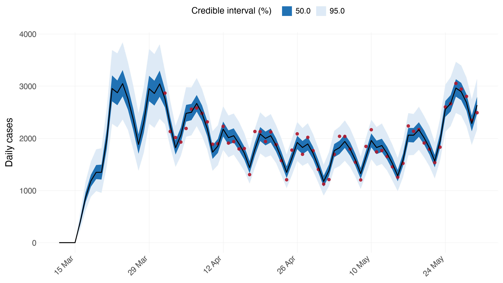
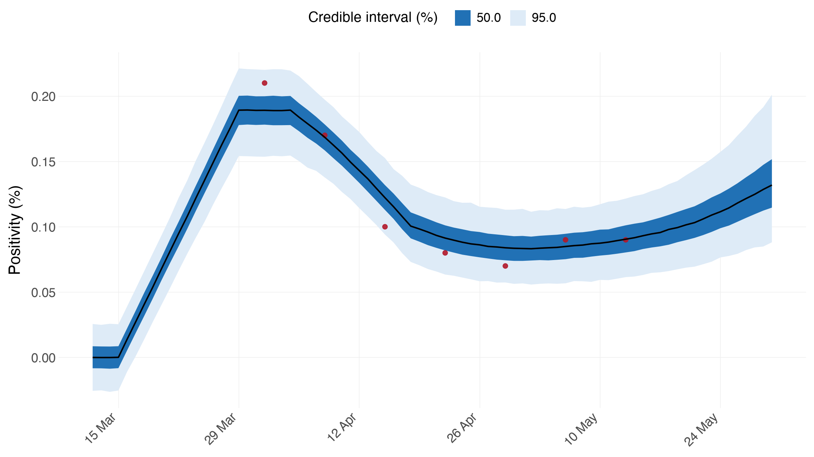
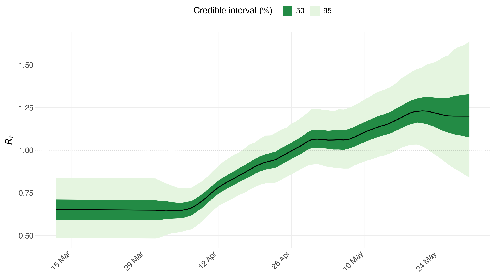
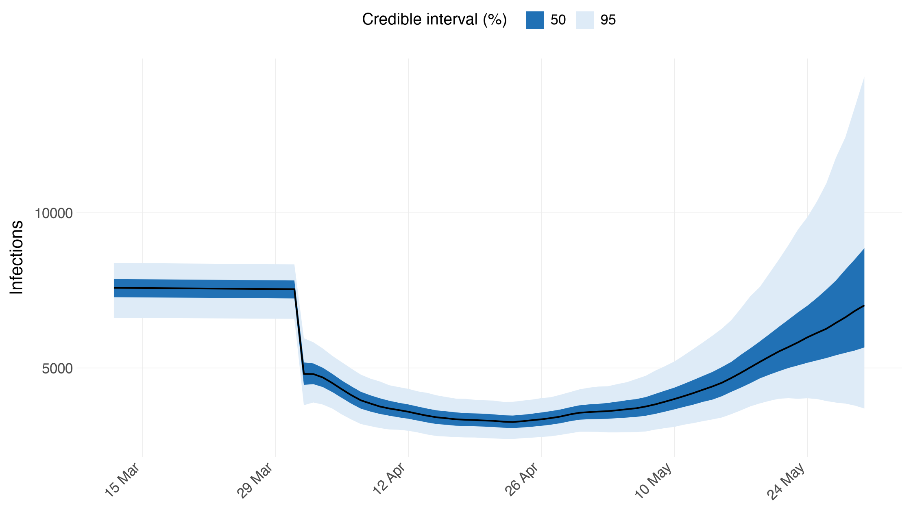
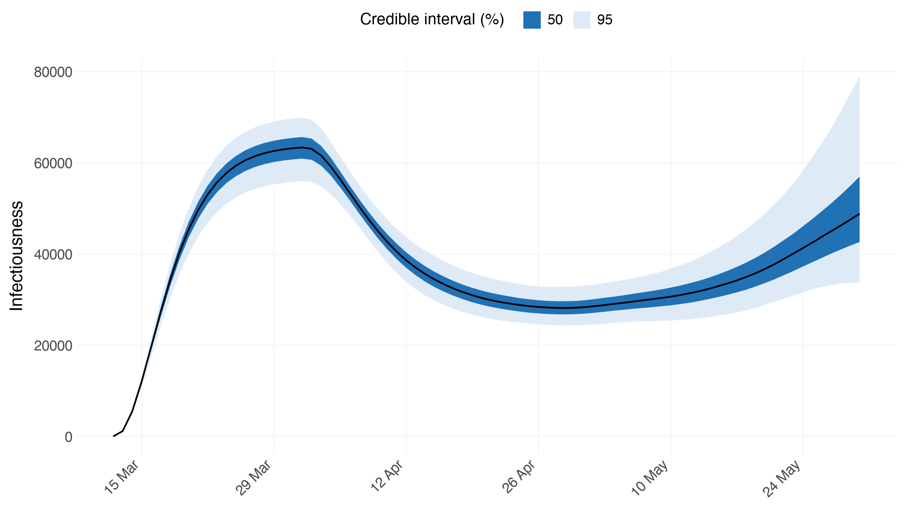
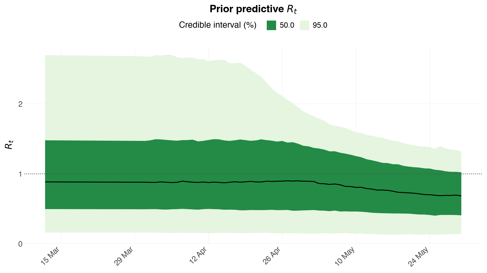

Tracking SARS-CoV-2 in England¶
Python counterpart of the R vignette
multiple-obs.
One region, two very different data streams. Daily case counts are plentiful but only a fraction of infections and heavily patterned by day of week. Weekly ONS positivity estimates are sparse — seven numbers — but they are a direct estimate of the prevalence of infection, with no ascertainment rate in the way. Fitting both lets each do the job it is suited to: the cases pin down the shape, the survey pins down the level.
This is the tutorial to read for three things the others do not show: series observed on different days, day-of-week effects, and an observation model whose kernel deliberately does not sum to one.
import numpy as np
import pandas as pd
import arviz as az
import epidemia
from epidemia.core import (
EpiModelConfig,
ObsModel,
PanelData,
RandomWalk,
build_epidemia_model,
fit_epidemia,
)
from epidemia.priors import normal
Data¶
england_new_cases() is PHE's "New Cases by Specimen Date" for England. We fit
the last 80 days, of which the first 20 are the seeding period — the model is
not conditioned on case counts there, which is what the mask below expresses.
cases_df = epidemia.england_new_cases()
cases_df = cases_df[cases_df["date"] > cases_df["date"].max() - pd.Timedelta(days=80)]
cases_df = cases_df.reset_index(drop=True)
T = len(cases_df)
dates = pd.to_datetime(cases_df["date"]).reset_index(drop=True)
cases = cases_df["cases"].to_numpy(dtype=float)
SEED_DAYS = 20
POP = 56_000_000 # England, roughly
print(f"{T} days, {dates.iloc[0].date()} to {dates.iloc[-1].date()}")
print(f"seeding period: first {SEED_DAYS} days (cases not fitted there)")
80 days, 2021-03-12 to 2021-05-30
seeding period: first 20 days (cases not fitted there)
The ONS Infection Survey publishes weekly positivity estimates. We take seven weeks from the 1st of April and place each on the Thursday of its week.
ons_dates = pd.to_datetime("2021-04-01") + pd.to_timedelta(7 * np.arange(7), "D")
ons_values = np.array([0.21, 0.17, 0.10, 0.08, 0.07, 0.09, 0.09])
positivity = np.full(T, np.nan)
for d, v in zip(ons_dates, ons_values):
hit = np.where(dates == d)[0]
if hit.size:
positivity[hit[0]] = v
print(f"{int(np.isfinite(positivity).sum())} of {T} days carry an ONS estimate")
7 of 80 days carry an ONS estimate
The panel¶
One region, no covariates on R_t.
M = 1
panel = PanelData(
X=np.zeros((M, T, 0)),
lengths=np.array([T]),
regions=["England"],
npis=[],
dates=[dates.to_numpy()],
pops=np.array([POP], dtype=float),
)
Transmission¶
\(R_t = 7\,g^{-1}(\beta_0 + w_t)\) with a logit link, so \(R_t\) is confined to \([0, 7]\). The walk is daily.
The R vignette does something worth copying: it builds a dt column that is
NA before the 1st of April, which keeps the walk out of the window where
there is no data to constrain it. RandomWalk(index=-1) is the Python
spelling of that NA — those days take the walk's \(w = 0\) initial condition.
It matters more than it looks. Giving the seeding days the walk's first step
instead leaves that step confounded with the intercept, since both just shift
the level: the fit comes back with r_hat 1.03 on intercept and no
divergences to hint at why.
# -1 means "no walk term on this day" -- R's NA in the rw(time =) column. The
# seeding days take the walk's w = 0 initial condition rather than its first
# step, which is a free parameter and would be confounded with the intercept.
rw_index = np.where(np.arange(T) < SEED_DAYS, -1, np.arange(T) - SEED_DAYS)
config = EpiModelConfig(
gen=epidemia.europe_covid().si,
link="scaled_logit",
R_link_K=7.0,
intercept=True,
prior_intercept=normal(-1.0, 1.0),
region_effects=False,
rw=RandomWalk(index=np.tile(rw_index, (M, 1)), prior_scale=0.05),
seed_days=SEED_DAYS,
prior_seeds=normal(15e3, 2e3),
pop_adjust=True,
prior_susc_mean=0.49,
prior_susc_sd=0.1,
)
print(f"walk steps: {rw_index.max() + 1} "
f"(no walk term for the first {SEED_DAYS} days)")
walk steps: 60 (no walk term for the first 20 days)
Series 1 — case counts¶
Cases are a delayed, partially ascertained view of infections: undetected for three days, then reported with equal probability over the following week. The ascertainment rate gets a logit link and its own daily random walk, because testing capacity changed over the period.
Day-of-week effects matter here — reporting dips at weekends — so the
ascertainment regression carries six dummies (Monday is the reference level,
absorbed by the intercept). This is R's
factor(day, ordered = FALSE).
The family is quasi_poisson: variance proportional to the mean, which is
R's parameterisation neg_binomial_2(E, E/aux).
dow = dates.dt.dayofweek.to_numpy()
X_dow = np.zeros((M, T, 6))
for k in range(6):
X_dow[0, :, k] = (dow == k + 1).astype(float) # Mon is the reference
obs_cases = ObsModel(
name="cases",
y=cases[None, :],
mask=(np.arange(T) >= SEED_DAYS)[None, :], # not fitted while seeding
i2o=np.concatenate([np.zeros(3), np.full(7, 1 / 7)]),
family="quasi_poisson",
link="logit",
X=X_dow,
intercept=True,
prior_intercept=normal(0.0, 1.5),
prior=normal(0.0, 0.5),
prior_aux=normal(10.0, 5.0),
rw=RandomWalk(index=np.tile(rw_index, (M, 1)), prior_scale=0.05),
)
Series 2 — ONS positivity¶
This one does not fit the usual template, and the R vignette is explicit about it. Positivity is the proportion of the population currently infected:
— everyone infected in the previous three days tests negative, everyone
infected in the two weeks before that tests positive. There is no
ascertainment rate at all, and the weights deliberately do not sum to one:
they sum to 14, then get divided by the population and multiplied by 100 to
give a percentage. All of that is folded into i2o, with an identity link
and an offset of 1 so no parameter multiplies it.
The mask is what lets a weekly series sit in a daily model: only the seven days carrying an estimate enter the likelihood.
i2o_ons = np.concatenate([np.zeros(3), np.ones(14)]) * 100.0 / POP
obs_ons = ObsModel(
name="positivity",
y=np.nan_to_num(positivity)[None, :],
mask=np.isfinite(positivity)[None, :], # weekly, not daily
i2o=i2o_ons,
family="normal",
link="identity",
intercept=False,
offset=np.ones((M, T)),
prior_aux=normal(0.01, 2.5e-3),
)
print(f"i2o sums to {i2o_ons.sum():.3e} -- deliberately not 1")
i2o sums to 2.500e-05 -- deliberately not 1
Fitting¶
Both series go in as a list. Everything else is a single-series fit.
target_accept=0.99 rather than the 0.95 the other tutorials use: the walk's
scale rw_scale sits in a funnel against the walk's own increments, and at
0.95 the sampler leaves a handful of divergent transitions and an R-hat above
1.01 on exactly that parameter. The diagnostics below are how that was found.
idata = fit_epidemia(panel, [obs_cases, obs_ons], config,
draws=2000, tune=2000, chains=4, seed=12345,
target_accept=0.99, progress_bar=False)
/Users/smishra/Documents/GitHub/epidemia/python/src/epidemia/multilevel.py:649: UserWarning: R-hat of 1.020 for rw_scale[0] exceeds 1.01, so the chains have not mixed.
/Users/smishra/Documents/GitHub/epidemia/python/src/epidemia/multilevel.py:649: UserWarning: Bulk ESS of 278 for rw_scale[0] is 70 per chain, below the 100 per chain that keeps posterior summaries stable.
Check the sampler first¶
This model does not sample cleanly, and it is worth being plain about why rather than quietly raising the iteration count until the warning goes away.
There are two random walks here — one on \(R_t\), one on case ascertainment
— and with a single region they compete for the same signal. A dip in reported
cases can be explained by transmission falling or by ascertainment falling,
and only the seven ONS positivity numbers distinguish them. The walk scales
are what absorb that ambiguity, so rw_scale is the parameter the diagnostics
complain about: its R-hat sits above 1.01 and its effective sample size stays
low even after doubling the draws, which is the signature of a geometry
problem rather than too short a run.
The R vignette meets the same wall and answers it the same way — it notes that "in order to ensure a large enough effective sample size" it raises the tree depth and uses 4,000 iterations. Treat the walk scales as poorly identified in this specification and do not quote their intervals. The quantities the tutorial is actually about — \(R_t\), infections, the day-of-week effects — are fine, which the summary below is the check for.
Sampler diagnostics
4 chains x 2000 post-warmup draws = 8000
chain divergent max_treedepth ebfmi
1 0 0 0.905
2 0 0 0.879
3 0 0 0.842
4 0 0 0.882
Divergent transitions: 0 (0.0%)
Hit max treedepth: 0 (0.0%)
Lowest E-BFMI: 0.84
Worst R-hat: 1.020 (rw_scale[0])
Lowest bulk ESS: 278 (rw_scale[0])
Lowest tail ESS: 487
Warnings:
* R-hat of 1.020 for rw_scale[0] exceeds 1.01, so the chains have not mixed.
* Bulk ESS of 278 for rw_scale[0] is 70 per chain, below the 100 per chain that keeps posterior summaries stable.
summ = az.summary(idata, var_names=["intercept", "cases|coef", "cases|aux",
"positivity|aux"])
print(summ[["mean", "sd", "r_hat", "ess_bulk"]].to_string())
mean sd r_hat ess_bulk
intercept -1.384 0.238 1.01 455.0
cases|coef[0] -0.047 0.089 1.00 12573.0
cases|coef[1] 0.055 0.093 1.00 10925.0
cases|coef[2] -0.108 0.094 1.00 11480.0
cases|coef[3] -0.346 0.092 1.00 10154.0
cases|coef[4] -0.658 0.092 1.00 10277.0
cases|coef[5] -0.374 0.085 1.00 11638.0
cases|aux 13.220 2.466 1.00 2714.0
positivity|aux 0.013 0.002 1.00 1579.0
Both series have to be explained¶
A joint model must fit everything it is conditioned on. series= picks one.
epidemia.plot_obs(idata, data=panel, obs_model=obs_cases, series="cases",
ylab="Daily cases", levels=(50, 95), save=False)

epidemia.plot_obs(idata, data=panel, obs_model=obs_ons, series="positivity",
ylab="Positivity (%)", levels=(50, 95), save=False)

The positivity panel has seven observations and a continuous predicted line through them, which is exactly what a mask buys: the series constrains the model only where it was measured.
Reproduction numbers¶

What the day-of-week effects look like¶
Reporting, not transmission. These shift the ascertainment rate, so they explain the weekly sawtooth in the case counts without contaminating \(R_t\).
coef = np.asarray(idata.posterior["cases|coef"]).reshape(-1, 6)
days = ["Tue", "Wed", "Thu", "Fri", "Sat", "Sun"]
tbl = pd.DataFrame({
"day": days,
"median": np.percentile(coef, 50, axis=0),
"5%": np.percentile(coef, 5, axis=0),
"95%": np.percentile(coef, 95, axis=0),
})
print("logit-scale shift vs Monday:")
print(tbl.round(3).to_string(index=False))
logit-scale shift vs Monday:
day median 5% 95%
Tue -0.047 -0.192 0.100
Wed 0.054 -0.096 0.209
Thu -0.108 -0.260 0.047
Fri -0.347 -0.498 -0.198
Sat -0.656 -0.812 -0.509
Sun -0.373 -0.515 -0.236
Infections and susceptibility¶
pop_adjust=True tracks the susceptible pool, so \(R_t\) and the effective
reproduction number diverge as the epidemic depletes susceptibles.


Writing the same model as a formula¶
Everything above assembled design matrices by hand, which is explicit but a
long way from R, where the formula is the interface. parse_formula reads
R's syntax, and build_from_formula turns a long data frame plus a formula
straight into the panel and the config keywords — the closest thing here to
epirt(formula = ...).
from epidemia.formula import build_from_formula, parse_formula
spec = parse_formula("R(region, date) ~ 1 + rw(time = week)")
print("group column :", spec.group)
print("date column :", spec.date)
print("intercept :", spec.intercept)
print("covariates :", spec.covariates)
print("random walk :", spec.rw)
group column : region
date column : date
intercept : True
covariates : []
random walk : [RwTerm(time='week', gr=None, prior_scale=0.2)]
Fed a data frame, it returns the same objects built by hand earlier, so the formula route and the explicit route are interchangeable.
demo = cases_df.assign(
region="England",
week=pd.to_datetime(cases_df["date"]).dt.strftime("%G-%V"),
pop=POP,
)
panel_f, series_f, cfg_kw = build_from_formula(
demo, "R(region, date) ~ 1 + rw(time = week)",
responses=["cases"], pop="pop", threshold=1, seed_offset=SEED_DAYS,
)
print("panel regions :", panel_f.regions)
print("panel shape :", panel_f.X.shape)
print("series built :", sorted(series_f))
print("config kwargs :", sorted(cfg_kw))
panel regions : ['England']
panel shape : (1, 80, 0)
series built : ['cases']
config kwargs : ['correlated', 'intercept', 'region_effects', 'rw']
/Users/smishra/Documents/GitHub/epidemia/python/src/epidemia/formula.py:586: UserWarning: 'England': only 0 day(s) before cumulative cases exceeded 1, fewer than seed_offset=20; starting at the first available day.
Prior predictive checks¶
Before looking at any posterior it is worth asking what the priors alone
imply. prior_PD=True drops every likelihood term, so sampling the model
returns draws from the prior predictive — R's epim(prior_PD = TRUE). If the
prior already rules out plausible epidemics, no amount of data will rescue the
fit.
prior_cfg = EpiModelConfig(**{**config.__dict__, "prior_PD": True})
idata_prior = fit_epidemia(panel, [obs_cases, obs_ons], prior_cfg,
draws=500, tune=500, chains=2, seed=1,
progress_bar=False)
rt_prior = np.asarray(idata_prior.posterior["Rt"]).reshape(-1, T)
qs = np.percentile(rt_prior, [5, 50, 95])
print(f"prior R_t: median {qs[1]:.2f}, 90% interval [{qs[0]:.2f}, {qs[2]:.2f}]")
print(f"(the scaled_logit cap is {config.R_link_K}, so R_t cannot exceed it)")
prior R_t: median 0.83, 90% interval [0.20, 2.11]
(the scaled_logit cap is 7.0, so R_t cannot exceed it)
/Users/smishra/Documents/GitHub/epidemia/python/src/epidemia/multilevel.py:649: UserWarning: R-hat of 1.020 for rw_noise[0, 11] exceeds 1.01, so the chains have not mixed.
epidemia.plot_rt(idata_prior, data=panel, levels=(50, 95), save=False,
title="Prior predictive $R_t$")

Caveats¶
The vignette this follows is candid that the positivity model is a simplification: it assumes a test is definitively negative for three days and definitively positive for the next fourteen, where the truth is a smooth curve of test sensitivity against time since infection, and says nothing about specificity. The case-ascertainment walk can absorb a great deal, so its estimates should not be read as a measurement of testing capacity.